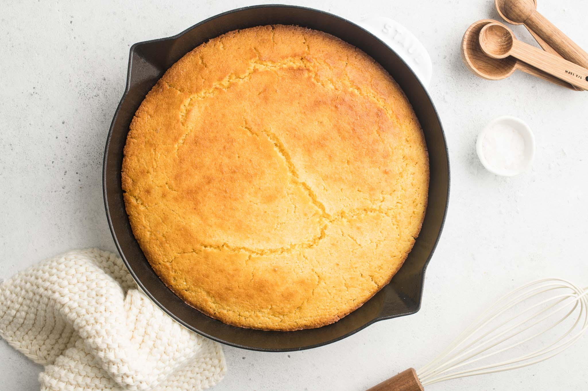

Cornbread

Description
There is no food more American than the classic cornbread. The soft, but firm baked bread made with cornmeal is easily the most important memorabilia of the American past, which is especially associated with the American South.
Ingredients
- 1 egg
- 1/3 cup vegetable oil
- 1 cup milk
- 3/4 cup sugar
- 3/4 teaspoon salt
- 1 heaped tablespoon baking powder
- 1 cup flour
- 1 cup cornmeal
- 1 tablespoon unsalted butter
Steps
- Place a 10 inch skillet in the oven and pre-heat to 400 F.
- Whisk together all the wet batter Ingredients with the sugar until smooth.
- Whisk in the flour and cornmeal until smooth. Don't over mix.
- When the oven and pan are hot, take out pan and out in butter. Use a paper towel to smear butter around edges and absorb any excess.
- Pour in the batter and return the pan to the oven.
- Bake 20-25 minutes.
- Let rest 5 minutes before turning out to cool on wire rack.
- Enjoy!
Back to home